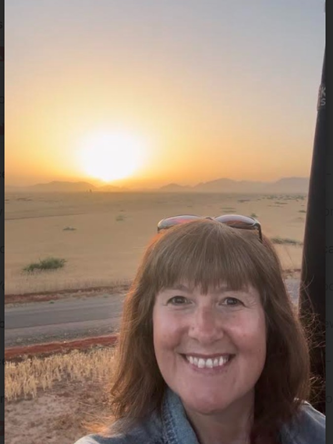

My Story
From the classroom to the check-in desk
For years I've worked as a skills tutor, helping job seekers across Leicester and Nottingham build the confidence and know-how to move forward in their careers. It's work I care about — and it's taught me something I carry straight into this business: people do their best when someone believes in them and gives them a clear next step.
Travel has always been my reset button. Somewhere between planning my own trips and helping friends plan theirs, I realised I was already doing the job — I just wasn't getting paid for it. Becoming an Independent Travel Agent let me turn something I loved into something that could genuinely support my family.
My trip to Marrakesh was the moment it clicked. I saved £500 booking it myself, then earned commission back on top — including a sunset camel ride and a sunrise balloon flight. These days I'm not out there booking everyone else's holidays; I love growing a team of agents instead, and helping them build the same thing for themselves.
My kids are grown now — 23 and 21 — and for the first time in years, it's my turn to actually travel more. Doing that on one income isn't always easy, though, and that's really where this started. This business has given me extra income, new friendships, and a way to travel smarter so those bigger holidays actually feel affordable — all while building something alongside my career, not instead of it.
If you're weighing up whether this could work for you too, I'd genuinely rather have an honest chat than sell you anything. Have a look at how it works, or just get in touch.

A little about me
- Based in the East Midlands, UK
- Skills tutor by day, travel agent by chance
- Known for a good laugh — usually found giggling about something
- A nurturer at heart: I love helping and supporting people
- Passionate about people, and I treasure my friendships
- Mum to two, plus two very spoiled rescue dogs
- Currently mid-way through a home renovation
"Two weeks till payday and £4 in the bank. If that's ever been you, you already know exactly why I started this."